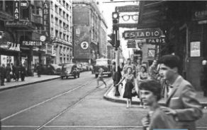

Salvatore Falabella abre la primera tienda como sastrería en 1889

En 1958, las ideas de los trabajadores para implementar materiales para el hogar generaron una gran atracción en los consumidores.
Falabella ingresa al Perú por primera vez al adquirir Saga. Este acuerdo se concretó en 1995.
En 1998, Falabella crea su banco y lanza la tarjeta de crédito CMR. En Perú se implementó en 2007.
En 1999, Falabella implementa la venta por internet, revolucionando el mercado y generando grandes ganancias.
En 2014, Falabella y Sodimac se asocian para expandirse en otros países y aumentar sus ganancias.